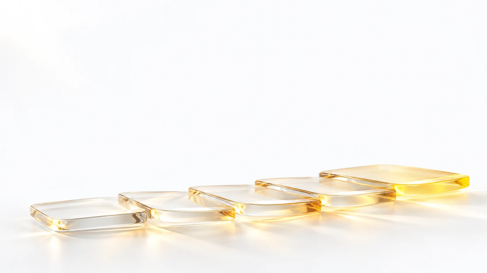
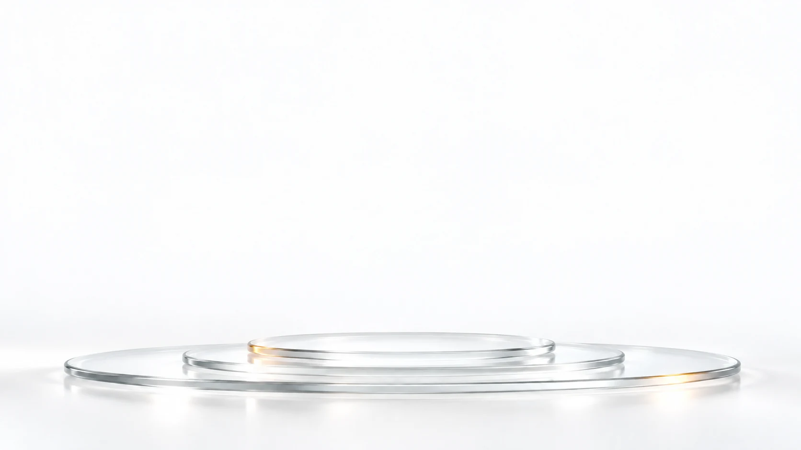

证据组织与资料核对
合成示例 · 研究资料审阅流程
产品中心-医学部｜2026年10月
研究范围
01研究人群
- 成人受试者，筛选期 4 周
- 既往治疗失败或不耐受
- 同期参加其他干预研究者排除
02主要终点
- 第 16 周较基线变化
- 缺失值不按零处理
- 分析人群与估计量分开说明
03安全性
- 治疗期间不良事件
- 停药原因分开登记
- 严重事件单列时间线
证据组织过程
界定范围先明确问题与纳入资料的边界。
- 研究对象：成人受试者
- 评价时间窗：第 16 周
- 纳入资料：方案、中心记录、实验室数据
- 限定 · 研究问题对象、范围与时间窗
- 对应 · 资料分组4 组，各组字段不同
- 连接 · 待确认差异2 项版本差异
- 回收 · 审阅意见回到原问题复核
- 1界定范围
问题与纳入边界
- 2整理证据
按主题和时间分组
- 3审阅差异
识别待补足限制
- 4回到问题
确认资料是否足够
资料完整性
分组数值
| 分组 | 完整 | 缺失 |
|---|
| 方案与修订 | 2 | 0 |
| 中心记录 | 9 | 3 |
| 实验室数据 | 6 | 0 |
| 安全性报告 | 4 | 0 |
核对计划

谢谢
证据组织与资料核对
产品中心-医学部｜2026年10月